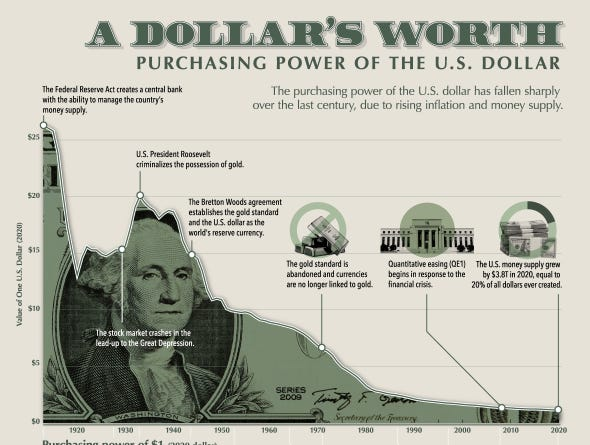
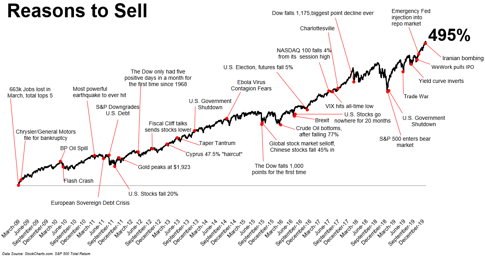

Choose a money path with clear eyes.Escolha um caminho financeiro com clareza.
This guide explains the main investment paths shown in Plainvest, what they are commonly used for, what can go wrong, and what a beginner should check before going deeper.Este guia explica os principais caminhos de investimento do Plainvest, para que são usados, o que pode dar errado e o que um iniciante deve verificar antes de ir mais fundo.
The 9 investment types at a glanceOs 9 tipos de investimento em resumo
Before comparing individual products, understand the shape of each category. This table gives you the broad picture so you can identify which paths match your situation before going deeper.Antes de comparar produtos individuais, entenda o formato de cada categoria. Esta tabela oferece uma visão ampla para que você identifique quais caminhos correspondem à sua situação antes de ir mais fundo.
| Investment typeTipo de investimento | Typical purposeUso típico | VolatilityVolatilidade | LiquidityLiquidez | ComplexityComplexidade | Income?Renda? |
|---|---|---|---|---|---|
| Broad index ETF / fundETF/fundo de índice amplo | Long-term growth, core holdingCrescimento de longo prazo, ativo central | MediumMédio | High (exchange hours)Alta (horário da bolsa) | LowBaixo | DistributionsDistribuições |
| Individual stocksAções individuais | Higher growth, company convictionMaior crescimento, convicção na empresa | Medium–HighMédio–Alto | High (exchange hours)Alta (horário da bolsa) | Medium–HighMédio–Alto | Dividends (optional)Dividendos (opcional) |
| Bonds / fixed incomeTítulos / renda fixa | Stability, capital preservationEstabilidade, preservação de capital | Low–MediumBaixo–Médio | MediumMédio | MediumMédio | Regular interestJuros regulares |
| REITs / FIIsREITs / FIIs | Property exposure, incomeExposição a imóveis, renda | MediumMédio | High (exchange-listed)Alta (listado em bolsa) | MediumMédio | Regular distributionsDistribuições regulares |
| GoldOuro | Inflation hedge, uncertainty bufferProteção contra inflação, reserva para incerteza | MediumMédio | High (ETF form)Alta (em ETF) | LowBaixo | NoneNenhuma |
| BitcoinBitcoin | Scarce digital asset, store of value thesisAtivo digital escasso, tese de reserva de valor | Very HighMuito alto | High (24/7)Alta (24/7) | Medium (custody adds complexity)Média (a custódia adiciona complexidade) | NoneNenhuma |
| Other cryptoOutras criptos | High-risk speculation, technology betsEspeculação de alto risco, apostas em tecnologia | ExtremeExtremo | VariableVariável | HighAlto | Sometimes (staking)Às vezes (staking) |
| Cash / savingsDinheiro / poupança | Emergency buffer, short-term needsReserva de emergência, necessidades de curto prazo | NoneNenhuma | ImmediateImediata | Very LowMuito baixo | InterestJuros |
| Brazil fixed income (CDB/LCI/Tesouro)Renda fixa Brasil (CDB/LCI/Tesouro) | Capital preservation, local incomePreservação de capital, renda local | LowBaixo | Low–Medium (lock-ups)Baixo–Médio (com carência) | Low–MediumBaixo–Médio | Regular interestJuros regulares |
Risk and return: the visual spectrumRisco e retorno: o espectro visual
Every investment type sits somewhere on a risk and return spectrum. Lower-risk options tend to offer more predictable but smaller returns. Higher-risk options can produce larger returns but also larger losses — including permanent loss of capital. This visual shows approximate relative positioning as a frame for thinking, not a precise measurement.Cada tipo de investimento se posiciona em algum ponto de um espectro de risco e retorno. Opções de menor risco tendem a oferecer retornos mais previsíveis, porém menores. Opções de maior risco podem produzir retornos maiores, mas também perdas maiores — incluindo perda permanente de capital. Este visual mostra posicionamento relativo aproximado como referência de raciocínio, não uma medição precisa.
Positions are approximate based on typical historical volatility. All investments carry real risk including the possibility of permanent loss. The spectrum does not account for fees, time horizon, liquidity, or individual suitability.As posições são aproximadas com base na volatilidade histórica típica. Todos os investimentos carregam risco real, incluindo a possibilidade de perda permanente. O espectro não considera taxas, horizonte de tempo, liquidez ou adequação individual.
The beginner mapO mapa do iniciante
Broad index funds and ETFs are usually the simplest base because they spread money across many companies.Fundos de índice amplo e ETFs são geralmente a base mais simples porque distribuem o dinheiro entre muitas empresas.
Bonds, fixed income, savings, and cash can reduce volatility, but inflation can quietly reduce real purchasing power.Títulos, renda fixa, poupança e caixa podem reduzir a volatilidade, mas a inflação pode silenciosamente reduzir o poder de compra real.
Single stocks, gold, Bitcoin, and crypto can play a role, but each requires more specific understanding.Ações individuais, ouro, Bitcoin e cripto podem desempenhar um papel, mas cada um exige uma compreensão mais específica.

The hardest investment path is behaviourO caminho mais difícil é o comportamento
The chart below is powerful because every red dot can feel like a strong reason to sell: recession fear, debt crisis, flash crash, political stress, oil shocks, war headlines, shutdowns, and bear-market panic. Yet over that period the broad market still climbed through repeated waves of fear.O gráfico abaixo é poderoso porque cada ponto vermelho pode parecer um forte motivo para vender: medo de recessão, crise de dívida, flash crash, tensão política, choques de petróleo, manchetes de guerra, lockdowns e pânico de bear market. Mesmo assim, ao longo desse período, o mercado amplo continuou subindo através de ondas repetidas de medo.
This does not mean selling is always wrong. It means the market gives investors scary stories all the time, and a beginner without a written plan can confuse a headline with a strategy.Isso não significa que vender seja sempre errado. Significa que o mercado oferece histórias assustadoras o tempo todo, e um iniciante sem um plano escrito pode confundir uma manchete com uma estratégia.

- A scary headline without a change in your original thesis.Uma manchete assustadora sem mudança na sua tese original.
- Social media panic, predictions, or short-term market noise.Pânico nas redes sociais, previsões ou ruído de curto prazo no mercado.
- Trying to perfectly time the bottom or avoid every correction.Tentar acertar o fundo perfeito ou evitar toda correção.
- Selling only because the account is red and uncomfortable to look at.Vender só porque a conta está no vermelho e é desconfortável olhar.
- Your goal, time horizon, or cash need has genuinely changed.Seu objetivo, horizonte de tempo ou necessidade de caixa mudou de verdade.
- The original investment thesis is broken or the risk is now too concentrated.A tese de investimento original está quebrada ou o risco está agora muito concentrado.
- You are rebalancing back to a written plan.Você está rebalanceando de acordo com um plano escrito.
- Fees, tax, product structure, or platform risk no longer make sense.Taxas, impostos, estrutura do produto ou risco de plataforma não fazem mais sentido.
AdvancedAvançado The research behind investor behaviourA pesquisa por trás do comportamento do investidor
Kahneman and Tversky showed that people evaluate gains and losses differently under risk. In plain English, losing money can feel much more painful than the pleasure of making the same amount, which helps explain why drawdowns can trigger panic.Kahneman e Tversky mostraram que as pessoas avaliam ganhos e perdas de forma diferente sob risco. Em linguagem simples, perder dinheiro pode parecer muito mais doloroso do que o prazer de ganhar o mesmo valor, o que ajuda a explicar por que quedas podem desencadear o pânico.
Barber and Odean studied individual investor trading and found a clear pattern: more active trading was associated with lower net performance after costs. Activity can feel productive, but it is not the same as progress.Barber e Odean estudaram as negociações de investidores individuais e encontraram um padrão claro: negociações mais frequentes estavam associadas a menor desempenho líquido após custos. Atividade pode parecer produtiva, mas não é o mesmo que progresso.
Before buying, write the sell rules. If you only decide after the market falls, emotion is already in the room. A simple rulebook protects you from turning volatility into a permanent mistake.Antes de comprar, escreva as regras de venda. Se você só decide após o mercado cair, a emoção já está na sala. Um conjunto simples de regras protege você de transformar volatilidade em um erro permanente.
Think about a financial decision you made based on fear or excitement rather than a plan. What would you do differently with a written rule in place?Pense em uma decisão financeira que você tomou por medo ou empolgação, e não por um plano. O que você faria diferente com uma regra escrita?
Index funds and ETFsFundos de índice e ETFs
An index fund or ETF can hold hundreds or thousands of companies in one product. Instead of trying to pick the best company, you buy exposure to a market, sector, or index. This is why many beginner education sources place diversification near the center of long-term investing.Um fundo de índice ou ETF pode ter centenas ou milhares de empresas em um único produto. Em vez de tentar escolher a melhor empresa, você compra exposição a um mercado, setor ou índice. É por isso que muitas fontes de educação para iniciantes colocam a diversificação no centro do investimento de longo prazo.
- Check the index it tracks: S&P 500, Nasdaq-100, ASX 200, global shares, bonds, sectors, or themes.Verifique o índice que o fundo rastreia: S&P 500, Nasdaq-100, ASX 200, ações globais, títulos, setores ou temas.
- Check the annual fee and trading cost. Small fee differences matter over decades.Verifique a taxa anual e o custo de negociação. Pequenas diferenças de taxa importam ao longo de décadas.
- Check whether the fund is broad or concentrated. A tech ETF and a total-market ETF are not the same risk.Verifique se o fundo é amplo ou concentrado. Um ETF de tecnologia e um ETF de mercado total não carregam o mesmo risco.
- Check currency exposure. A fund listed in your country can still own overseas assets.Verifique a exposição cambial. Um fundo listado no seu país pode ainda ter ativos no exterior.
| QuestionPergunta | Why it mattersPor que importa | Beginner signalSinal para iniciantes |
|---|---|---|
| How many holdings?Quantos ativos? | More holdings usually means less single-company risk.Mais ativos geralmente significam menos risco de uma única empresa. | Broad market funds are usually easier to understand first.Fundos de mercado amplo costumam ser mais fáceis de entender primeiro. |
| What is the expense ratio?Qual é a taxa de administração? | Fees quietly reduce compound growth every year.As taxas reduzem silenciosamente o crescimento composto todo ano. | Lower cost is usually better when products track similar indexes.Menor custo costuma ser melhor quando os produtos seguem índices semelhantes. |
| Accumulating or distributing?Acumulação ou distribuição? | Some funds reinvest income, others pay it out.Alguns fundos reinvestem os rendimentos, outros os distribuem. | Know whether cash dividends appear in your account.Saiba se os dividendos em dinheiro aparecem na sua conta. |
| Local or global exposure?Exposição local ou global? | Your currency and country concentration affect real outcomes.Sua concentração em moeda e país afeta os resultados reais. | A local listing does not always mean local assets.Uma listagem local nem sempre significa ativos locais. |
Stocks, bonds, REITs, gold, and cryptoAções, renda fixa, FIIs, ouro e cripto
You own a piece of one company. Upside can be high, but company-specific risk is real. Revenue, profit, debt, valuation, competition, and management matter.Você possui uma parte de uma empresa. O potencial de ganho pode ser alto, mas o risco específico da empresa é real. Receita, lucro, dívida, avaliação, concorrência e gestão importam.
Often used for income and stability. Interest rates, credit risk, maturity, inflation, and country rules matter.Frequentemente usados para renda e estabilidade. Taxas de juros, risco de crédito, vencimento, inflação e regras locais importam.
Property exposure without buying a full property. Watch interest rates, debt, tenant quality, property type, and payout sustainability.Exposição a imóveis sem precisar comprar um imóvel inteiro. Observe taxas de juros, dívida, qualidade dos inquilinos, tipo de imóvel e sustentabilidade dos rendimentos.
Often used as a hedge against currency weakness or market fear. It does not pay income and can underperform growth assets for long periods.Frequentemente usado como proteção contra a desvalorização cambial ou o medo do mercado. Não paga renda e pode ter desempenho inferior aos ativos de crescimento por longos períodos.
A scarce digital asset with a fixed issuance schedule. It is volatile, has deep drawdowns, and requires security knowledge.Um ativo digital escasso com um cronograma fixo de emissão. É volátil, tem quedas profundas e exige conhecimento de segurança.
Very high risk. Projects can fail, platforms can collapse, scams are common, and custody mistakes can be permanent.Risco muito alto. Projetos podem falhar, plataformas podem colapsar, golpes são comuns e erros de custódia podem ser permanentes.
Decision checklist before going deeperChecklist de decisão antes de ir mais fundo
- Purpose: Is this for long-term growth, income, stability, inflation protection, or learning?
- Time horizon: Can you leave the money invested through bad markets?
- Risk: What could cause this to fall 20%, 50%, or more?
- Fees and tax: What are product fees, brokerage fees, spreads, and tax rules?
- Behaviour: Would you panic if the value dropped quickly?
Which of these five questions do you feel least prepared to answer about your next investment? That is where to focus your learning next.Qual dessas cinco perguntas você se sente menos preparado para responder sobre seu próximo investimento? É aí que deve focar seu aprendizado agora.
Portfolio thinking: core and satellitePensamento de portfólio: núcleo e satélite
A professional way to reduce confusion is to separate a portfolio into core and satellite. The core is the stable learning foundation: broad diversified funds, long time horizon, recurring contributions, and low fees. Satellites are smaller positions used for learning, themes, higher risk, or specific beliefs.Uma forma profissional de reduzir a confusão é separar o portfólio em núcleo e satélite. O núcleo é a base estável de aprendizado: fundos diversificados amplos, horizonte de longo prazo, contribuições recorrentes e taxas baixas. Os satélites são posições menores usadas para aprendizado, temas, maior risco ou convicções específicas.
Global index ETF, S&P 500 ETF, ASX 200 ETF, diversified bond fund, cash buffer, broad retirement/superannuation allocation.ETF de índice global, ETF do S&P 500, ETF do ASX 200, fundo de títulos diversificado, reserva em caixa, alocação ampla para aposentadoria/superannuation.
Single stocks, sector ETFs, gold, Bitcoin, Ethereum, thematic ETFs, REITs/FIIs, or country-specific opportunities.Ações individuais, ETFs setoriais, ouro, Bitcoin, Ethereum, ETFs temáticos, REITs/FIIs ou oportunidades específicas por país.
Investment policy statement: the professional habitDeclaração de política de investimento: o hábito profissional
A simple investment policy statement is a written rulebook for your money. It reduces emotional decision-making because you decide the plan before the market tests you. Beginners can keep it one page.Uma declaração de política de investimento simples é um manual de regras escrito para o seu dinheiro. Ela reduz a tomada de decisões emocionais porque você define o plano antes que o mercado te teste. Iniciantes podem mantê-la em uma página.
| PartParte | What to writeO que escrever | ExampleExemplo |
|---|---|---|
| GoalObjetivo | Why the money is invested.Por que o dinheiro está investido. | Long-term wealth building over 10+ years.Construção de patrimônio de longo prazo, 10+ anos. |
| Core allocationAlocação central | The main diversified foundation.A principal base diversificada. | Broad index funds or ETFs as the first learning base.Fundos de índice amplo ou ETFs como primeira base de aprendizado. |
| Satellite limitLimite satélite | Maximum amount for higher-risk ideas.Valor máximo para ideias de maior risco. | Single stocks, Bitcoin, gold, or thematic assets kept intentional.Ações individuais, Bitcoin, ouro ou ativos temáticos mantidos de forma intencional. |
| Review ruleRegra de revisão | How often the plan can change.Com que frequência o plano pode mudar. | Review every 6 or 12 months, not every headline.Revise a cada 6 ou 12 meses, não a cada manchete. |
| Panic ruleRegra de pânico | What to do during large drawdowns.O que fazer durante grandes quedas. | Re-read thesis, check cash needs, avoid forced selling.Releia a tese, verifique necessidades de caixa, evite venda forçada. |
Risk layers members should understandCamadas de risco que os membros devem entender
Every investment carries multiple layers of risk simultaneously. Beginners often focus on market risk (price going down) but miss the other five. Understanding all six before buying is part of the preparation process.Todo investimento carrega múltiplas camadas de risco simultaneamente. Iniciantes costumam focar no risco de mercado (preço caindo) mas ignoram as outras cinco. Entender todas as seis antes de comprar faz parte do processo de preparação.
The whole market reprices. Diversification helps, but does not remove this. Even the safest broad ETF fell 34% in March 2020.O mercado inteiro reprecifica. A diversificação ajuda, mas não elimina esse risco. Mesmo o ETF amplo mais seguro caiu 34% em março de 2020.
Too much money in one company, country, sector, platform, or narrative. The portfolio is as fragile as its largest position.Dinheiro demais em uma empresa, país, setor, plataforma ou narrativa. O portfólio é tão frágil quanto sua maior posição.
You cannot sell quickly at a fair price, or withdrawals are delayed. Common in crypto during crashes, and in Brazilian fixed-income lock-ups.Você não consegue vender rapidamente a um preço justo, ou os saques são atrasados. Comum em cripto durante crises e em bloqueios de renda fixa brasileira.
Your asset is priced in one currency while life expenses are in another. USD assets held by AUD earners carry FX exposure both ways.Seu ativo está precificado em uma moeda enquanto suas despesas de vida estão em outra. Ativos em USD detidos por quem ganha em AUD carregam exposição cambial nos dois sentidos.
Panic selling, FOMO buying, overtrading, or changing strategy during every correction. Studies suggest this is the most costly risk for most individual investors.Vender no pânico, comprar por FOMO, negociar demais ou mudar de estratégia a cada correção. Estudos sugerem que esse é o risco mais custoso para a maioria dos investidores individuais.
Broker, exchange, or custody failure. Account access issues. Withdrawal freezes. FTX had 1 million customers. This risk is real and underpriced.Falha de corretora, exchange ou custodiante. Problemas de acesso à conta. Bloqueios de saque. A FTX tinha 1 milhão de clientes. Esse risco é real e subestimado.
Rebalancing and reviewRebalanceamento e revisão
A portfolio drifts over time. If one asset rises much faster than others, it can become a bigger part of your money than intended. Rebalancing is the habit of bringing the portfolio back toward the original plan.Um portfólio deriva ao longo do tempo. Se um ativo sobe muito mais rápido que outros, ele pode se tornar uma parte maior do seu dinheiro do que o planejado. Rebalanceamento é o hábito de trazer o portfólio de volta ao plano original.
Review every 6 or 12 months. This is simpler for beginners and avoids constant tinkering.Revise a cada 6 ou 12 meses. Isso é mais simples para iniciantes e evita ajustes constantes.
Review only when an allocation moves far from target, such as 5% or 10% away from the plan.Revise apenas quando uma alocação se afasta muito da meta, como 5% ou 10% do plano.
Direct new contributions toward underweight assets before selling anything.Direcione novos aportes para ativos subponderados antes de vender qualquer coisa.
Selling can create tax events, so members should understand local tax rules before changing positions.Vender pode criar eventos tributários, então os membros devem entender as regras fiscais locais antes de mudar posições.
Country notes: what beginners typically compareNotas por país: o que os iniciantes geralmente comparam
Broad ETFs (S&P 500, total market), Roth IRA and 401(k) tax-advantaged accounts, expense ratio comparison, dividend treatment, and brokerage selection.ETFs amplos (S&P 500, mercado total), contas com vantagens fiscais Roth IRA e 401(k), comparação de taxas de administração, tratamento de dividendos e seleção de corretora.
ASX-listed ETFs, international ETFs, superannuation strategy, brokerage platform fees, CHESS ownership, franking credits, and CGT discount for 12-month holdings.ETFs listados na ASX, ETFs internacionais, estratégia de superannuation, taxas de plataforma de corretagem, custódia CHESS, franking credits e desconto de CGT para ativos mantidos por 12 meses.
Tesouro Direto, CDB, LCI/LCA (tax-exempt), FIIs (real estate funds), ETFs on B3, BDRs (global shares via Brazilian market), local stocks, income tax rules, liquidity, and FGC guarantee limits.Tesouro Direto, CDB, LCI/LCA (isentos de IR), FIIs (fundos imobiliários), ETFs na B3, BDRs (ações globais via mercado brasileiro), ações locais, regras de imposto de renda, liquidez e limites de garantia do FGC.
United States: what beginners typically start withEstados Unidos: por onde os iniciantes geralmente começam
US investors have access to some of the lowest-cost, most liquid investment products in the world. The challenge is not finding options — it is choosing the right structure for your goal and tax situation.Investidores americanos têm acesso a alguns dos produtos de investimento de menor custo e maior liquidez do mundo. O desafio não é encontrar opções — é escolher a estrutura certa para o seu objetivo e situação fiscal.
SPY and IVV track the S&P 500 (500 large US companies). VTI and SCHB track the entire US market. QQQ tracks the Nasdaq-100 (tech-heavy). VOO is Vanguard's S&P 500 ETF. Expense ratios as low as 0.03%. Start here before anything else.SPY e IVV rastreiam o S&P 500 (500 grandes empresas americanas). VTI e SCHB rastreiam todo o mercado americano. QQQ rastreia o Nasdaq-100 (pesado em tecnologia). VOO é o ETF de S&P 500 da Vanguard. Taxas de administração a partir de 0,03%. Comece aqui antes de qualquer outra coisa.
401(k): employer-sponsored retirement account, often with employer matching (free money — always contribute enough to get the full match first). Roth IRA: after-tax contributions grow tax-free; withdrawals in retirement are not taxed. Traditional IRA: pre-tax contributions, taxed on withdrawal. Contribute to tax-advantaged accounts before taxable brokerage accounts.401(k): plano de aposentadoria patrocinado pelo empregador, frequentemente com contribuição equivalente do empregador (dinheiro grátis — sempre contribua o suficiente para obter todo o matching primeiro). Roth IRA: contribuições pós-imposto crescem isentas de imposto; saques na aposentadoria não são tributados. IRA Tradicional: contribuições pré-imposto, tributadas no saque. Contribua para contas com vantagem fiscal antes de contas de corretagem tributáveis.
The S&P 500 covers roughly 80% of the US market. Total market funds add mid-cap and small-cap companies. The long-term return difference is small, but total market is more complete. Either is a strong beginner choice.O S&P 500 cobre cerca de 80% do mercado americano. Fundos de mercado total adicionam empresas de médio e pequeno porte. A diferença de retorno de longo prazo é pequena, mas o mercado total é mais completo. Ambos são uma forte escolha para iniciantes.
VXUS covers all international stocks. VEA covers developed markets (Europe, Japan, Australia). VWO covers emerging markets. Many US investors hold 70–80% US / 20–30% international as a broad benchmark. Neither is wrong; the decision is a personal risk and diversification choice.VXUS cobre todas as ações internacionais. VEA cobre mercados desenvolvidos (Europa, Japão, Austrália). VWO cobre mercados emergentes. Muitos investidores americanos mantêm 70–80% EUA / 20–30% internacional como referência geral. Nenhuma das duas é errada; a decisão é uma escolha pessoal de risco e diversificação.
DALBAR's annual studies compare market returns with what average investors actually received. Over most 20-year periods, average investor returns significantly underperform the index — primarily due to buying after rises, selling after falls, and moving money during bad headlines. The gap is a behaviour gap, not a product gap.Os estudos anuais da DALBAR comparam os retornos do mercado com o que os investidores médios realmente receberam. Na maioria dos períodos de 20 anos, os retornos médios dos investidores ficam significativamente abaixo do índice — principalmente por comprar após altas, vender após quedas e mover dinheiro durante manchetes negativas. O gap é comportamental, não de produto.
A $10,000 investment earning 7%/yr over 30 years: at 0.03% expense ratio (index ETF) → approximately $74,800. At 1.00% expense ratio (actively managed) → approximately $57,400. The 0.97% difference costs roughly $17,400 — 174% of the original investment — purely in compounded fees.Um investimento de $10.000 com 7%/ano ao longo de 30 anos: com taxa de 0,03% (ETF de índice) → aproximadamente $74.800. Com taxa de 1,00% (gestão ativa) → aproximadamente $57.400. A diferença de 0,97% custa cerca de $17.400 — 174% do investimento original — puramente em taxas compostas.
Brazil deep: the main investment paths explainedBrasil em profundidade: os principais caminhos de investimento explicados
Brazilian investors have access to a wide range of products that do not exist elsewhere. Understanding the local options before comparing them with international alternatives matters because tax treatment, liquidity, and risk differ significantly.Investidores brasileiros têm acesso a uma ampla gama de produtos que não existem em outros lugares. Entender as opções locais antes de compará-las com alternativas internacionais é importante porque o tratamento fiscal, a liquidez e o risco diferem significativamente.
Government bonds sold directly by the Brazilian Treasury. The safest option in Brazil. Three main types: Tesouro Selic (tracks the Selic rate, daily liquidity), Tesouro IPCA+ (inflation-linked, protects real value), and Tesouro Prefixado (fixed rate at purchase). Start with Tesouro Selic for simplicity and emergency reserve-style savings.Títulos públicos vendidos diretamente pelo Tesouro Nacional. A opção mais segura no Brasil. Três tipos principais: Tesouro Selic (acompanha a taxa Selic, liquidez diária), Tesouro IPCA+ (indexado à inflação, protege o valor real) e Tesouro Prefixado (taxa fixa na compra). Comece com o Tesouro Selic pela simplicidade e como reserva de emergência.
Loans to banks in exchange for interest. Often pays a percentage of the CDI rate (e.g. 100% CDI, 110% CDI). FGC guarantee covers up to R$250,000 per CPF per institution. Compare net of income tax (regressive: 22.5% for under 6 months, down to 15% for over 2 years).Empréstimos a bancos em troca de juros. Frequentemente paga uma porcentagem do CDI (ex: 100% CDI, 110% CDI). A garantia do FGC cobre até R$250.000 por CPF por instituição. Compare o rendimento líquido de imposto de renda (regressivo: 22,5% em até 6 meses, chegando a 15% após 2 anos).
Bank-issued bonds linked to real estate (LCI) or agribusiness (LCA). The main advantage: income tax exempt for individuals. Compare net return against CDB — an LCI at 90% CDI can beat a CDB at 100% CDI after tax. Watch liquidity: many have lock-up periods.Títulos emitidos por bancos ligados ao setor imobiliário (LCI) ou do agronegócio (LCA). A principal vantagem: isentos de imposto de renda para pessoas físicas. Compare o rendimento líquido com o CDB — uma LCI a 90% do CDI pode superar um CDB a 100% do CDI após impostos. Atenção à liquidez: muitos têm carência.
Brazilian real estate investment trusts. Traded on B3 like stocks. Monthly income distributions that are often income-tax exempt for individuals. Types include brick FIIs (actual properties), paper FIIs (CRI/CRA), and hybrid. Watch management fees, vacancy rates, and debt levels.Fundos de investimento imobiliário brasileiros. Negociados na B3 como ações. Distribuições mensais de renda frequentemente isentas de imposto de renda para pessoas físicas. Os tipos incluem FIIs de tijolo (imóveis reais), FIIs de papel (CRI/CRA) e híbridos. Observe taxas de administração, vacância e nível de endividamento.
Brazilian ETFs track local indexes (IBOV, IDIV, SMLL) and international indexes (S&P 500 via BDRs). Lower cost than most active funds. BOVA11 tracks the Ibovespa; IVVB11 tracks the S&P 500 in BRL. Good starting point for diversified exposure.ETFs brasileiros rastreiam índices locais (IBOV, IDIV, SMLL) e internacionais (S&P 500 via BDRs). Custo menor do que a maioria dos fundos ativos. BOVA11 rastreia o Ibovespa; IVVB11 rastreia o S&P 500 em BRL. Bom ponto de partida para exposição diversificada.
Certificates representing shares of foreign companies (Apple, Amazon, Microsoft) traded on B3 in Brazilian reais. Currency exposure to the dollar is built in. Useful for global diversification without a foreign brokerage account.Certificados representando ações de empresas estrangeiras (Apple, Amazon, Microsoft) negociados na B3 em reais. A exposição cambial ao dólar já está embutida. Útil para diversificação global sem precisar de uma conta em corretora estrangeira.
- You understand the difference between broad index ETFs and concentrated assets like individual stocks or cryptoVocê entende a diferença entre ETFs de índice amplo e ativos concentrados como ações individuais ou cripto
- You know that behaviour — not just product selection — is the main risk for most beginner investorsVocê sabe que o comportamento — não apenas a escolha do produto — é o principal risco para a maioria dos iniciantes
- You can name at least 3 of the 6 risk layers every investment carriesVocê consegue nomear pelo menos 3 das 6 camadas de risco que todo investimento carrega